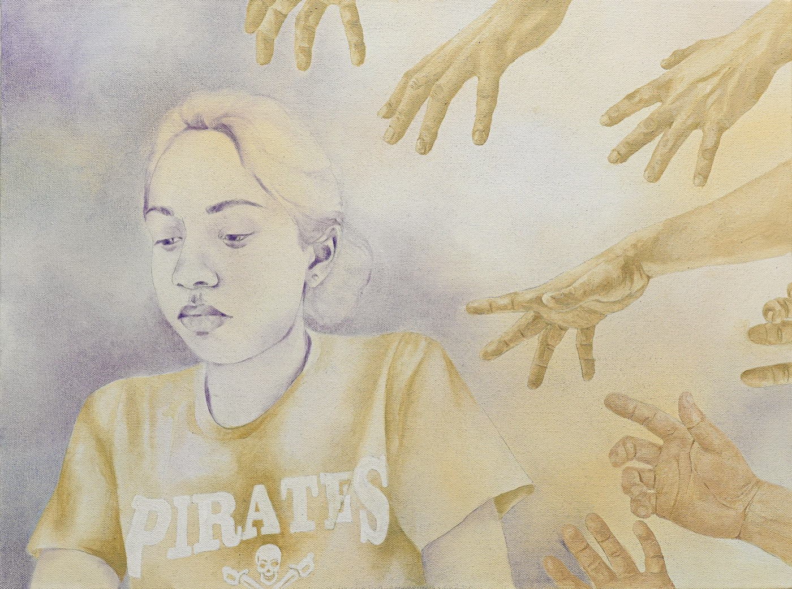
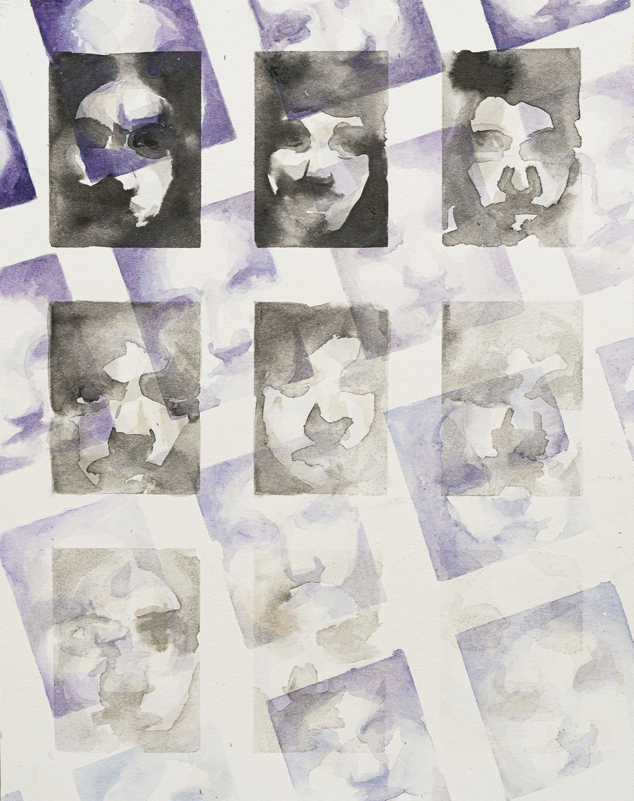
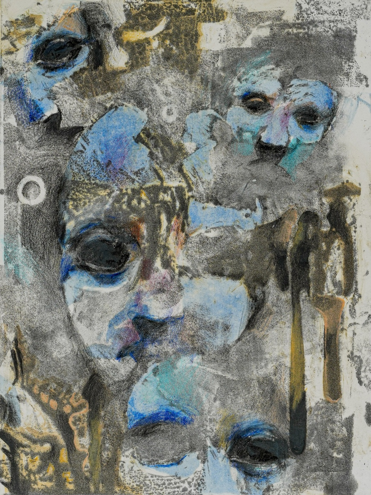
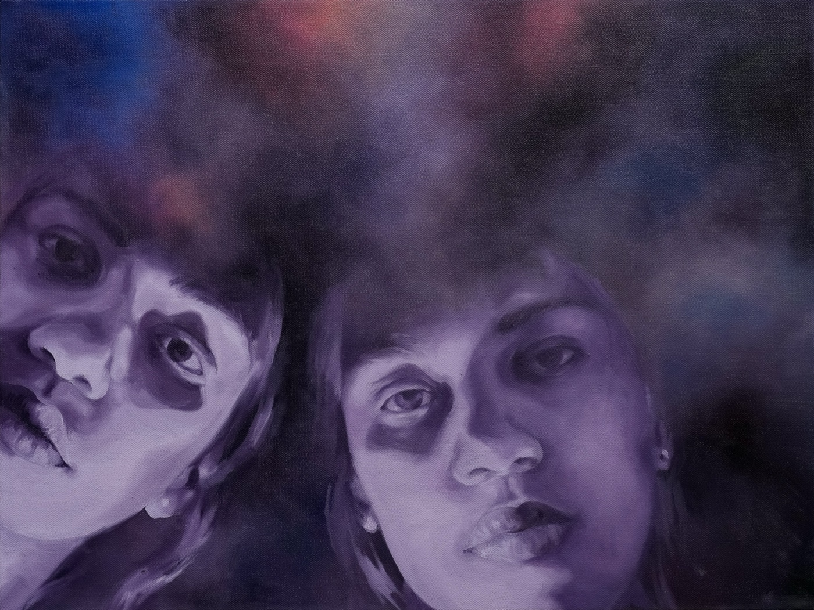

Selected paintings






“I apply oil paint directly with my hands… each work holds both intimacy and detachment. I blur edges, allowing representations to remain unresolved.”
from my artist’s statement
Oil self-portraits about identity: figures that look unified but are built from disparate, conflicting selves. Twenty-plus paintings, a UN first place, a permanent museum collection, and an upcoming solo show on AI and art.




An upcoming solo show on the intersection of AI and art, including interactive installations that visualize embedding space alongside the paintings.
An invite-only exhibit where 100+ executives, policymakers, and AI-governance leaders tried to tell my oil paintings from DALL·E replicas, then argued with me about authorship, creativity, and what we owe to responsible AI. It is now permanently displayed at Credo.AI’s San Francisco offices.
You pushed through the technical parts without losing the personal feeling in the work.Joshua Martinez, my art teacher, on the LED-wall piece
Try it yourself: which is the real oil painting?
Click a canvas and take your guess.
ArtStravaganza (2023 to 2025) and the AP Art exhibition (2025), featuring 100+ student artists.